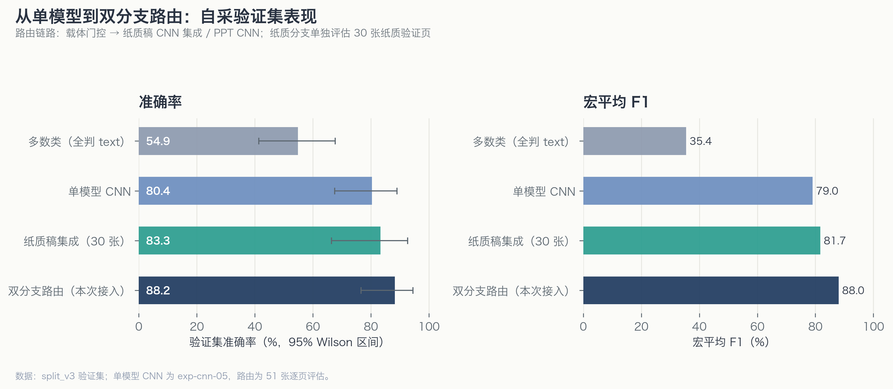
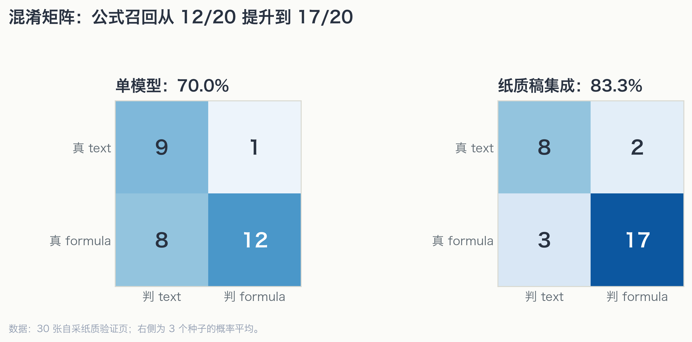

GitHub Pages 静态演示：展示 6 个预计算样张，不运行后端模型。 完整的上传分析、四角校准、批量 PDF 与训练集标注请在本机运行 webapp。
选择样张
点击卡片查看原图四角、矫正图、扫描件与分类结果。
评估结果
自采验证集 51 张逐页评估：双分支路由准确率 88.24%，宏平均 F1 88.01%。 完整报告见 web_integration.md。


定位 · 拉正 · 扫描件 · 内容分类
GitHub Pages 静态演示：展示 6 个预计算样张，不运行后端模型。 完整的上传分析、四角校准、批量 PDF 与训练集标注请在本机运行 webapp。
点击卡片查看原图四角、矫正图、扫描件与分类结果。
自采验证集 51 张逐页评估：双分支路由准确率 88.24%，宏平均 F1 88.01%。 完整报告见 web_integration.md。

